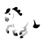

<!-- En-tête de la page avec le titre de l'application et boutons d'action -->
<ion-header [translucent]="true">
  <ion-toolbar>
    <ion-title> TrackNJump </ion-title>
    <ion-buttons slot="end">
      <ion-button (click)="importRiders()">
        <ion-icon slot="icon-only" name="cloud-upload-outline"></ion-icon>
      </ion-button>
      <ion-button (click)="addRider()">
        <ion-icon slot="icon-only" name="add-circle-outline"></ion-icon>
      </ion-button>
    </ion-buttons>
  </ion-toolbar>
</ion-header>

<!-- Contenu principal -->
<ion-content class="flex-container" [fullscreen]="true">
  <!-- Liste vide -->
  <div *ngIf="riders.length === 0" class="empty-state">
    <ion-icon name="people-outline"></ion-icon>
    <p>Aucun cavalier</p>
    <p class="empty-hint">Ajoutez un cavalier ou importez une épreuve</p>
  </div>

  <!-- Liste des cavaliers -->
  <ion-list *ngIf="riders.length > 0">
    <ion-reorder-group
      [disabled]="false"
      (ionItemReorder)="handleReorder($event)"
    >
      <ion-item-sliding *ngFor="let rider of riders; trackBy: trackByRiderId">
        <app-rider-card
          [rider]="rider"
          [rightHanded]="rightHanded"
          (passed)="togglePassed($event)"
          (nonStarter)="toggleNonStarter($event)"
          (deleted)="deleteRider($event)"
          (updated)="onRiderUpdated($event)"
        ></app-rider-card>
      </ion-item-sliding>
    </ion-reorder-group>
  </ion-list>

  <!-- Bouton de latéralité -->
  <div class="manual-preference-container">
    
    <ng-template #leftHanded>
      
    </ng-template>
  </div>
</ion-content>
